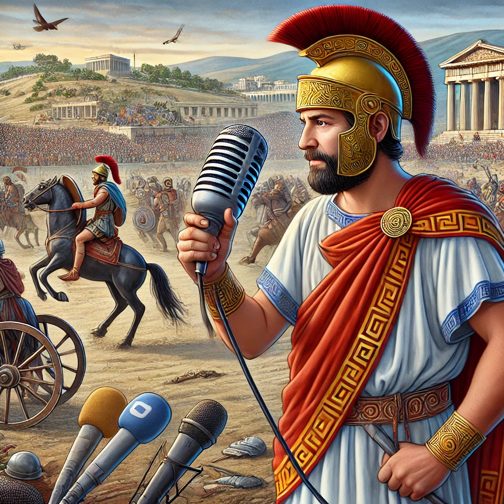

Híradó különkiadás - Élőben Trójából és Ithakából!
Jó estét kívánok, kedves nézőink! Rendkívüli hírekkel jelentkezünk, a Homérosz Híradó különkiadásával.
Két elképesztő történet borzolja a kedélyeket: Trójában hősies harcok tombolnak, míg Ithaka partjain
különös események
zajlanak. Nézzük az eseményeket részletesen!

Exkluzív Interjú a Trójai Háború Hősével
Riporter: Üdvözöllek, hős! Tudd meg, hogy már régóta várok erre a pillanatra.
A nevem Eléthosz, és ma veled szeretnék beszélgetni a kalandjaidról, amelyeket az istenek és
a háborúk szöktek eléd.
Harcos: Miért akarod ezt tudni, Eléthosz? Még élünk, és túl sok történetet éltem meg
ahhoz, hogy mindet elmondjam. Az istenek kegyének hála, itt vagyok, de háborúzom, nem mesélek.
Riporter: De hát éppen ezért! Az embereknek szükségük van arra, hogy hallják.
Hogy megértsék, mi rejlik a harcos szíve mögött. Miért mentél el a háborúba?
Mi hajtott téged, amikor először vállaltad, hogy harcolsz?
Harcos: Hogy mi hajtott? A honvágy. A család. A győzelem.
De nem csupán az érdemek miatt mentem. Nézd, Eléthosz, amikor a falut felégették, és
a szeretteinket elhurcolták, a harc már nem választás kérdése volt. A gyűlölet tüze bennünk égett.
Riporter: De amikor hazaérsz, nem nehéz elviselni a sebeket, a szellemeket, a háború árnyait?
Hogyan találod meg a békét, miután annyi vért ontottál?
Harcos: A békét nem találod meg, Eléthosz, nem itt. De talán ott, az istenek világában.
Ha élek, az azért van, mert még van bennem valami, amit be kell fejeznem. De tudom, hogy
a háború minden lépése nyomot hagy.
Riporter: Amit itt és most tettél, az örökké megmarad a történelemben. Az emberek emlékezni fognak rád,
nemcsak mint harcosra, hanem mint arra, aki a hírnév és a fájdalom között egyensúlyozott.
Mi a legfontosabb, amit megtanultál?
Harcos: A legfontosabb tanulság? Ne hidd, hogy bármi is örök. A háború és a dicsőség mind múlandó.
Az igazi erő nem az, hogy megverj másokat, hanem hogy megértsd, miért harcolsz, és hogy képes legyél
a döntéseid terhét elviselni.
Az Öreg Mester Dárdái – Csak az Akháj Piacon!
"Légy üdvözölve, harcos! Én vagyok Theron, az utolsó mesterkovács, ki még ismeri a régi idők titkait.
Kezemből nem holmi lándzsa kerül ki, hanem a sorsod meghosszabbítása! Minden dárdám
istenek által áldott és harcban kipróbált.
Ha méltónak érzed magad egy igazán halálos fegyverre, keresd fel sátramat az akháj piacon – máshol nem találsz ilyen kincset!"
(Sietned kell, mert minden hajnalban csak három dárda készül!)
Felkutatod Theron sátrát?